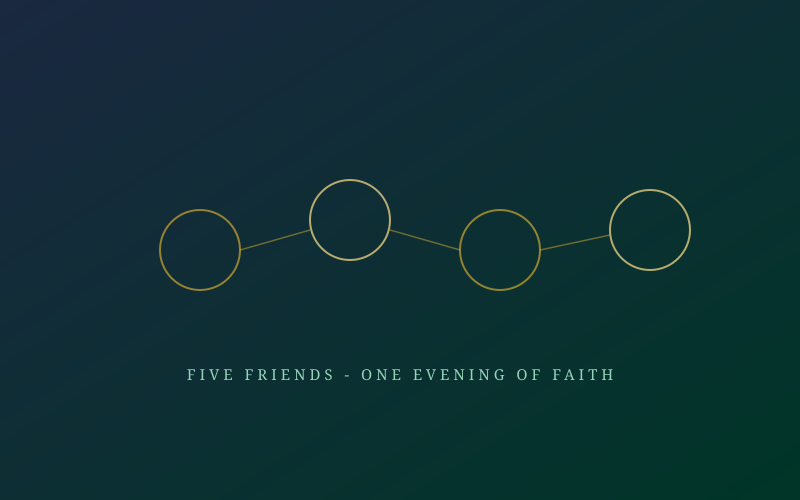

The Early Believers — As-Sabiqun al-Awwalun
Five friendships, one evening, and a faith that would outlast empires.

A Single Evening of Trusted Conversation
Among Abu Bakr's (RA) closest friends in Makkah were a handful of young men already known for their character, wealth, or family standing. One by one, through quiet and personal conversation — never a public sermon, never a gathering that could draw attention — Abu Bakr (RA) shared the message of Islam with them. Each accepted without coercion, weighing the truth of the message on its own merit.
Uthman ibn Affan (RA)
A wealthy and gentle-natured merchant from the powerful Umayyad clan. His conversion was a significant moment — proof that the message could reach even Makkah's most privileged families. He would later become the third Caliph and is remembered for compiling the Qur'an into a single authoritative text.
Zubayr ibn al-Awwam (RA)
A nephew of Khadija (RA), known even as a teenager for his fearless temperament. He accepted Islam very early and is remembered as one of the most daring warriors among the companions.
Sa'd ibn Abi Waqqas (RA)
One of the earliest archers of Islam, said to be the first person to fire an arrow in defence of the faith. He would go on to lead the army that conquered Persia.
Talha ibn Ubaydullah (RA)
A young, well-travelled trader who accepted Islam after hearing of the Prophet's mission from a Christian monk on a journey to Syria — arriving home already convinced.
Abdur Rahman ibn Awf (RA) — The Merchant of Charity
Another of the five, Abdur Rahman ibn Awf (RA), would become one of the wealthiest companions in Islamic history — and one of its most generous. Despite his riches, he lived simply and gave so extensively in charity that his name became synonymous with selfless wealth used in service of faith.
Why It Mattered
Together with Khadija, Abu Bakr, Ali, and Zaid (RA), these men form the nucleus of As-Sabiqun al-Awwalun — and five of them are counted among the Asharah Mubashsharah, the Ten Companions explicitly promised Paradise. Their entry into Islam, achieved entirely through private trust rather than public preaching, proved that the secret Da'wah strategy was working exactly as intended: building a foundation strong enough to survive the open confrontation still to come.
- All five accepted Islam within the first two years of the secret Da'wah.
- Each came from a different walk of life — wealth, lineage, trade, and travel — showing the message's universal reach.
- Several are counted among the Ten Promised Paradise, a unique honour in Islamic tradition.
Continue the Archive
Not every believer had wealth or a protective clan. Read what the weak and enslaved among them endured.
Read Trials & Sacrifice →